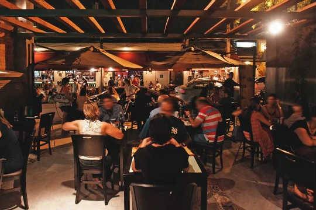
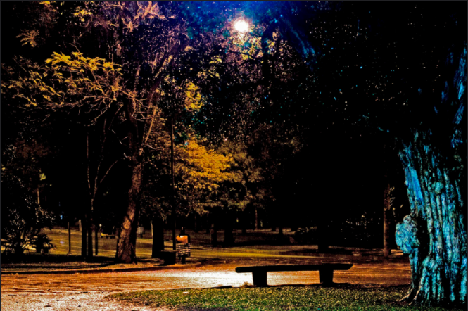

Passear na Avenida Paulista!
Um dos principais centros financeiros da cidade, a avenida Paulista
também possui diversas opções de entretenimento. Endereço do Museu de
Arte de São Paulo, MASP, do Teatro Gazeta e muitos outros, a
região é de fácil acesso graças a diversas linhas de ônibus que cruzam
a avenida e a linha de metrô que passa por baixo dela.
A avenida Paulista sempre é assunto. O que será que estão falando a
respeito no Twitter?
Os bares da Vila Madalena

Depois de um dia de trabalho, nada melhor do que um bom chopp, um
petisco e uma conversa em uma mesa de bar. Opções de sobra na região
das ruas Aspicuelta, Fradique Coutinho e Wisard.
Veja quais são os melhores bares e restaurantes da região no
TripAdvisor.
O Parque Ibirapuera

Um dos cartões postais da cidade, o parque dispõe de mais de 1,5 km²
de área verde, lagos artificiais além de pista de cooper e ciclismo. E se isso
não fosse suficiente, o parque costuma ser palco de diversos eventos culturais
ao longo do ano.
Veja no mapa como chegar ao
parque.